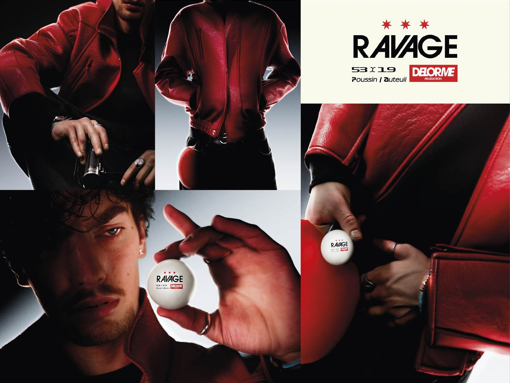

PROJET 06 / 07
Ravage
RAVAGE est un projet personnel réalisé dans le cadre d’un essai photographique. Il s’agit d’un shooting photo sur fond vert.
Ce projet a pour but de mettre en exergue le travail de post-production.
Souvent négligée, elle prouve un point : même avec peu de budget, la post-production peut compenser un manque d’expérience en tant que réalisateur en prise de vue réelle.
Inspirée par Marty Supreme, la direction artistique s’oriente vers une atmosphère sombre et cinématique, appuyée par le design de la balle de ping-pong recréée en 3D.
Découvrir les autres projets →